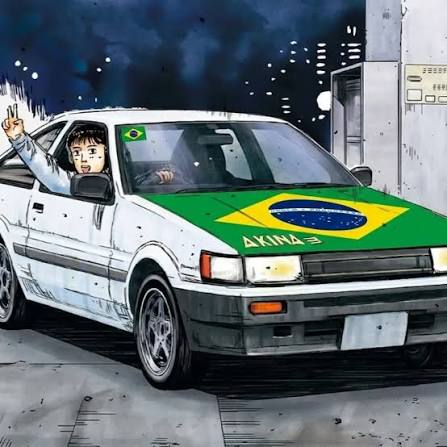
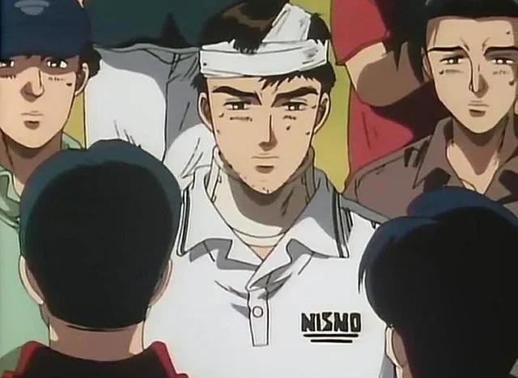

Initial D um anime de carros febre dos anos 90
Onde tudo começou...
Nossa história sobre este magnífico anime começa quando conhecemos Takumi Fujiwara, 18 anos de idade e estudante cursando seu último ano de ensino médio, apático e sem o
menor interesse por carros, trabalha como frentista em um posto de gasolina e recém-habilitado para dirigir carros.
A história começa a ficar interessante ao saber que
desde os seus 13 anos de idade (sim, um menor de idade dirigindo), ele realiza entregas diárias de tofu durante a madrugada para o negócio de seu pai, chamado Bunta, este que era lendário das corridas de ruas em sua juventude, na qual he evita contar para seu
filho Takumi durante a série sobre seu passado com corridas.
O carro usado por eles é um icônico Corolla Trueno (AE86), um carro de tração traseira e considerado leve para seu motor.
Nas suas entregas de tofu pela cidade, seu pai colocava um copo quase transbordando de água sobre o painel do Corolla, pois assim, seria uma maneira de Takumi dirigir cautelosamente
e não estragar o frágil tofu.
O que seu pai não sabia é que com isto, Takumi desenvolveu instintivamente técnicas avançadas de controle de peso e drift em alta velocidade, dominando cada curva da montanha
na chuva ou no seco sem sequer ter noção de sua própria genialidade ao volante, um verdadeiro Ayrton Senna dos animes.
O anime muda realmente de página quando os RedSuns, uma famosa equipe de corrida de rua liderada pelos irmãos Takahashi, aparecem na cidade de Takumi e desafiam a equipe local, Akina SpeedStars, da qual fazem parte os
três amigos do nosso personagem principal, Itsuki, Kenji e Iketani, este último como líder da equipe.
Iketani aceita correr contra os RedSuns pela honra e também por defender seu território, porém no dia da corrida, machucado após um acidente e sem ninguém à altura para
enfrentar o prodígio Keisuke Takahashi, he se vê desesperado procurando alguém para substituí-lo, é aí então que acabam contando para Takumi, que seu pai era um gênio nos volantes e pede para que he consiga convencer seu pai
a ajudar eles neste desafio de corrida, porém, Bunta acaba emprestando seu Corolla (AE86) para que seu próprio filho acabe aparecendo na montanha no lugar do líder.
Ao término da corrida, Takumi acaba vencendo por muito pouco, mas o suficiente para honrar o nome da equipe Akina SpeedStars de seus amigos, o que melhora ainda mais a situação é que eles
achavam que era o próprio pai de Takumi que estava correndo, o que é desmascarado quando Takumi abre a porta do carro e vê todos seus amigos sem acreditar no que estavam vendo, uma verdadeira cena de cinema.

A exibição original do anime de Initial D durou 16 anos, começando em abril de 1998 e sendo concluída em junho de 2014.
Em vez de ser transmitido de forma contínua
como um anime semanal tradicional, a adaptação foi dividida em temporadas espaçadas chamadas de "Stages" (Estágios), acompanhando o ritmo de publicação do mangá
original de Shuichi Shigeno e passando por diferentes estúdios de animação ao longo dos anos.
O criador
O criador de Initial D é Shuichi Shigeno, um mangaká japonês nascido em 1958 na província de Niigata — uma região montanhosa e cheia de estradas sinuosas vizinha a Gunma,
onde a história se passa. Antes de criar sua obra mais famosa em 1995, Shigeno já havia feito sucesso nos anos 1980 com Bari Bari Densetsu, um mangá focado em corridas de
moto que inclusive lhe rendeu o prestigiado Prêmio de Mangá Kodansha.
A principal inspiração para Initial D veio da própria paixão de Shigeno por carros esportivos e da cultura real dos hashiriya (corredores de rua ilegais nas estradas de
montanha do Japão, chamadas de touge), que atingiu seu auge entre o final dos anos 1980 e os anos 1990. Na época, Shigeno possuía um Toyota Sprinter Trueno AE86 idêntico
ao de Takumi e costumava dirigir pelas passagens de montanha reais de Gunma — como o Monte Haruna, que serviu de molde exato para o fictício Monte Akina — para mapear curvas,
testar sensações de direção e desenhar os cenários com extremo realismo.
Para garantir que as técnicas de pilotagem, física e modificações mecânicas fossem fiéis à realidade, Shigeno contou com a consultoria técnica de Keiichi Tsuchiya, o lendário
piloto profissional japonês conhecido mundialmente como o "Drift King" (Rei do Drift). Tsuchiya começou sua carreira exatamente correndo de forma clandestina nas montanhas
japonesas a bordo de um AE86, e sua trajetória real ajudou a moldar tanto as manobras quanto a própria personalidade e estilo de pilotagem de Takumi Fujiwara (além de render
ao piloto uma participação especial dublando a si mesmo no anime).

Como eram as equipes?
Em Initial D, baseado no Japão, para cada monte com curvas perigosas existia uma equipe dominando e impondo suas regras de corridas, em espécie de territórios, nas mais
vastas corridas que vemos durante toda a série, podemos ver que determinadas equipes tinham formas diferentes para realizar suas corridas.
O anime nos mostra claramente a inspiração que o criador Shigeno teve de nos mostrar as corridas touge, que na vida real, era baseado em descer um monte derrapando com os carros
nas curvas fechadas que acompanhavam a descida.
Foi muito frequente nos anos 80 e 90 nos montes do Japão, e que era praticamente considerado uma cultura e até esporte entre os entusiastas.
E como foi o anime no Brasil?
O anime estreou oficialmente por aqui em 2005, através do canal pago Animax (que exibiu o First Stage e o Second Stage totalmente dublados em português).
A dublagem brasileira marcou época entre os fãs, contando com nomes como Fábio Lucindo no papel de Takumi Fujiwara. O anime conquistou uma base fiel de fãs entre entusiastas de carros,
cultura JDM e drift, impulsionado também pelo enorme sucesso das máquinas de arcade Initial D Arcade Stage nos shoppings brasileiros e pelo lançamento do filme live-action de Hong Kong
(2005) em DVD no país.
Nos anos seguintes, sem renovação de direitos na TV ou chegada oficial completa aos streamings no Brasil, a obra acabou se mantendo viva principalmente por meio de
comunidades de fãs, fóruns automotivos e fansubs.

Gostou e quer descobrir mais?
Logo abaixo reunimos um conteúdo bem completo sobre todas as curiosidades em volta do Initial D, incluindo a trilha sonora. Também contamos tudo sobre cada equipe, contendo os respectivos personagens e as corridas que acontecem ao longo da série, vale a pena conferir!

Curiosidades
Descubra fatos marcantes, histórias de bastidores e detalhes surpreendentes que fizeram parte de toda a trajetória do anime!
Saiba mais
Personagens e seus carros
Conheça em detalhes cada um dos integrantes, as mentes criativas por trás das equipes e os possantes de cada personagem!
Saiba mais